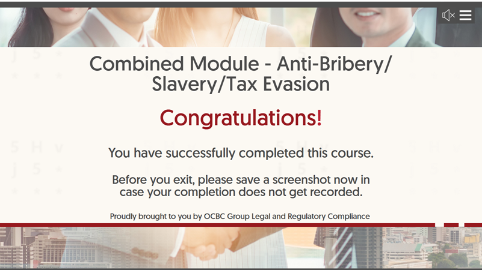
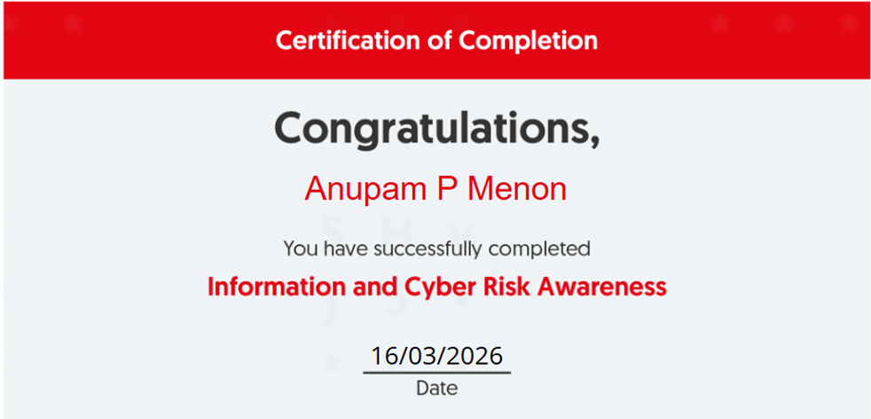
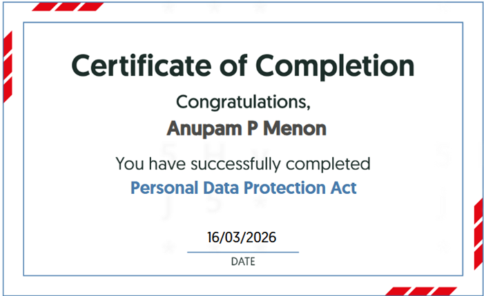
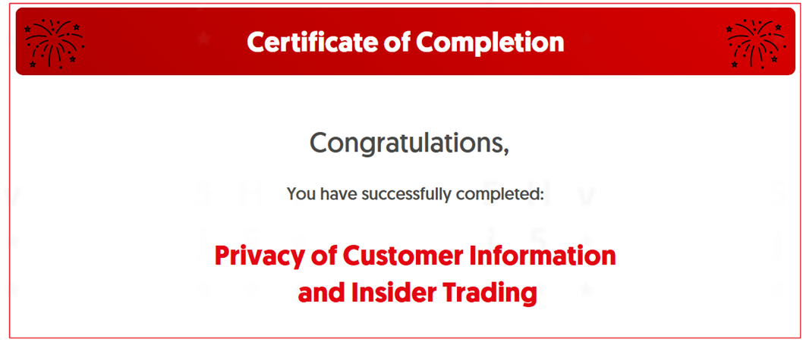
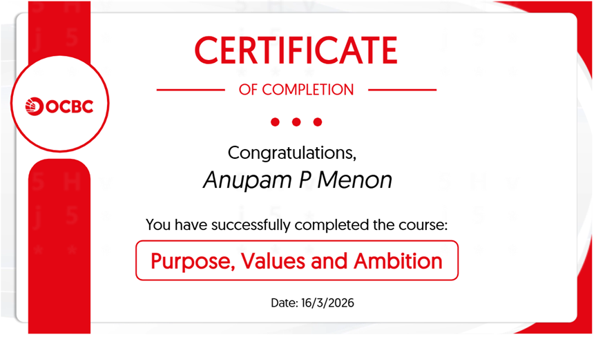

that's me!
Anupam's
Internship
Diary
DATA ENGINEER · OCBC ENTERPRISE DATA
I build the pipelines & dashboards that turn messy raw data into decisions people actually trust. This is the scrapbook version of that story.
CH. 01
who / where / what
Data Engineer Intern, 1 year Guided Work-Based Learning
OCBC Bank, Enterprise Data, inside Group Operations & Technology (GO&T)
Requirements → mockup → SQL → data lake → test → automate. I own dashboards start to finish.
A family of management dashboards used by Heads of Department and the Head of Group O&T.
CH. 02
what the job looks like
Answer stakeholder questions, write & debug SQL, check overnight pipeline runs didn't break.
Review mockups & live builds with business owners before anything touches production.
Own a dashboard end-to-end: first conversation to self-refreshing report nobody has to think about.
CH. 03
how a dashboard gets built
← drag the filmstrip →
Requirements
Sit with the business owner and work out what decision the dashboard needs to support.
CSV Mockup
Build it off a flat CSV first. Layout and metrics get argued over here, cheaply.
SQL Logic
CASE-based classification + UNION-based consolidation across source systems.
Data Lake (Hue)
Swap the CSV for the real source tables. Validate it still matches the mockup.
Testing
Chase down mismatches and edge dates the mockup never had to deal with.
Production
Scheduled, self-refreshing, zero human in the loop.
CH. 04
evidence of work
drag a photo to flip through the stack, tap to read the full story
CH. 05
skills & level of competency
mapped to Skills Framework for ICT, Data Engineer track (double-check my levels against the official SFw before you submit this, future me)
SQL that extracts, classifies & consolidates records from multiple sources into one table.
Common schema so regional tables reconcile cleanly via UNION.
Turning a stakeholder's question into a live, decision-ready view.
Structured conversations that scope a dashboard before any build starts.
Deploy + schedule so reports refresh with zero manual work.
Communication · Collaboration · Problem Solving · Sense-Making · Adaptability
CH. 06
journal entries
I started this internship thinking I already knew the tools. That lasted about a week. What I'd learned in class was the tip of the iceberg. Enterprise rules aren't optional, and even the software I already knew, I was barely scratching the surface of. In school we used maybe 10% of what these tools can do. Here I had to learn to use them at full capacity.
The way through it was to stop assuming and start asking, and to map every unfamiliar process out (usually starting with a CSV mockup) instead of guessing at it.
I used to think six months of internship was "enough". A full year is a different kind of learning: living through the entire lifecycle (requirements, mockup, build, test, deploy, automate) more than once, on real systems, with real consequences. Not many people my age get that. Even with lower pay than a shorter internship, the experience has been worth more than the money, especially this early.
I moved from SQL that technically worked to SQL that held up under review. I moved from needing every step explained to independently gathering requirements, mocking up, and only then writing production logic. The result: dashboards that are actually live, on scheduled unattended refreshes, actually being used, not shelved after the demo.
CH. 07
the part i'm proud of
~30,000
people in the org my dashboards inform decisions for
The most senior audience for my work is the Head of Group Operations & Technology, along with the Heads of Department who review these dashboards directly. Knowing that something I helped build, from the first requirements conversation to the SQL behind it, is something a person at that level actually opens and relies on is a different kind of impact than any school project gave me. The Core Operations Processing executive dashboard is the clearest example: it's not a mockup anymore, it's in active use.
CH. 08
proof it happened
tap any certificate to zoom in

tap to zoom

tap to zoom

tap to zoom

tap to zoom

tap to zoom
more to be pinned up here as they come in
THE END (FOR NOW)
let's talk
Digital Portfolio · IND1 · Guided Work-Based Learning